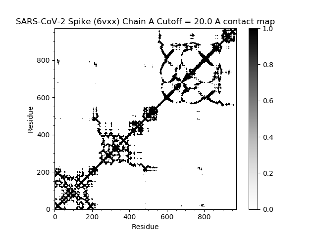
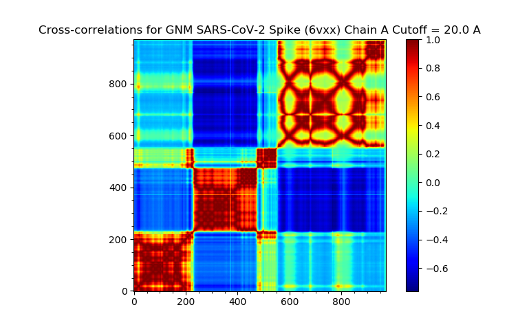
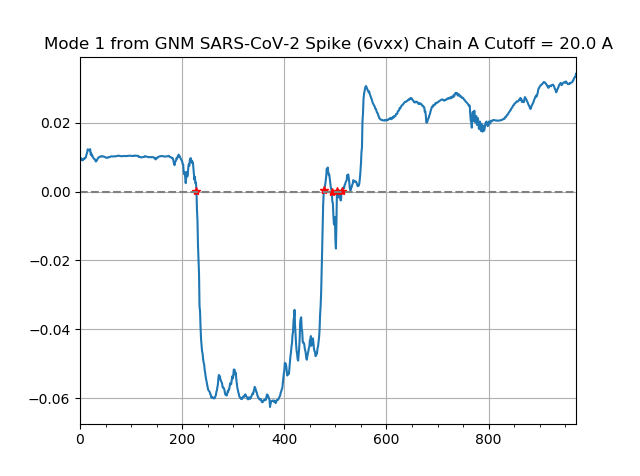
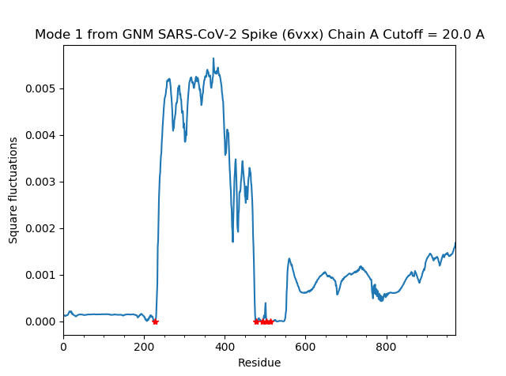

Software Tutorial: Analysis of Coronavirus Spike Proteins Using GNM
Gaussian Network Model Calculations
In this tutorial, we will be on performing GNM calculations on one of the chains in the SARS-CoV-2 S protein and then visualizing the results in different maps and plots. Please be sure to have 6vxx.pdb downloaded in the current working directory. (You can also download it directly while parsing as explained in the RMSD Tutorial.)
First, follow the steps in Setting up ProDy to start up IPython and import the neccessary functions.
Next, we will parse in 6vxx and set it as the variable spike.
In[#]: spike = parsePDB('6vxx.pdb')
For this GNM calculation, we will focus only on the alpha-carbons of Chain A. We will create variable calphas with the selection.
In[#]: calphas = spike.select('calpha and chain A')
Now, we will instantiate a GNM instance and build the corresponding Kirchhoff matrix. You can pass parameters for the cutoff (threshold distance between atoms) and gamma (spring constant). The defaults are 10.0 Å and 1.0, respectively. Here, we will set the cutoff to be 20.0 Å.
In[#]: gnm = GNM('SARS-CoV-2 Spike (6vxx) Chain A Cutoff = 20.0 A') #This is the title that will appear on top of the plots
In[#]: gnm.buildKirchhoff(calphas, cutoff=20.0)
For the creation of normal modes, the default is 20 non-zero modes. This value can be changed and zero modes can be kept if desired. e.g. gnm.calcModes(50, zeros=True). We will use the default. In addition, we will create hinge sites for later use in the slow mode shape plot. These sites represent places in the protein where the fluctuations change in relative direction.
In[#]: gnm.calcModes()
In[#]: hinges = gnm.getHinges()
(Optional) Information of the GNM and Kirchhoff matrix can be pulled with the following commands.
In[#]: gnm.getEigvals()
In[#]: gnm.getEigvecs()
In[#]: gnm.getCovariance()
#To get information specifically on the slowest mode (which is always indexed at 0):
In[#]: slowMode = gnm[0]
In[#]: slowMode.getEigval()
In[#]: slowMode.getEigvec()
We have now successfully created the GNM calculations and can generate the maps plots. Make sure to save the visualization (if desired) and close the plot before creating another. We will discuss how to interpret these visualization back in the main text.
Contact Map:
In[#]: showContactMap(gnm);

Cross-correlations:
In[#]: showCrossCorr(gnm);

Slow Mode Shape:
In[#]: showMode(gnm[0], hinges=True)
In[#]: grid();

Square Fluctuations
In[#]: showSqFlucts(gnm[0], hinges=True);

Now, let’s head back to the main text on how to read our visualizations and analyze our results.